From August 1 to 4, 2025, the 22nd ChinaJoy (China Digital Interactive Entertainment Expo) closed at the Shanghai New International Expo Centre. Sony and its imaging and esports brand INZONE showed at booth E7-S002. Sony brought mirrorless cameras, F2 lenses, high-performance flash, and its new flagship OLED esports monitor and headset. With strong technology and a wide product range, it drew many photographers, cosplayers, gamers, and visitors. The six interactive zones were busy, and an immersive wave of play without limits swept the hall.
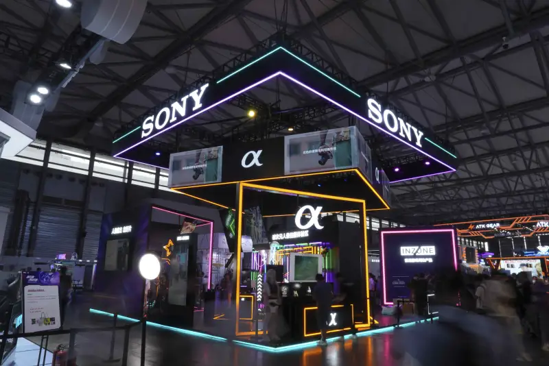
Sony booth
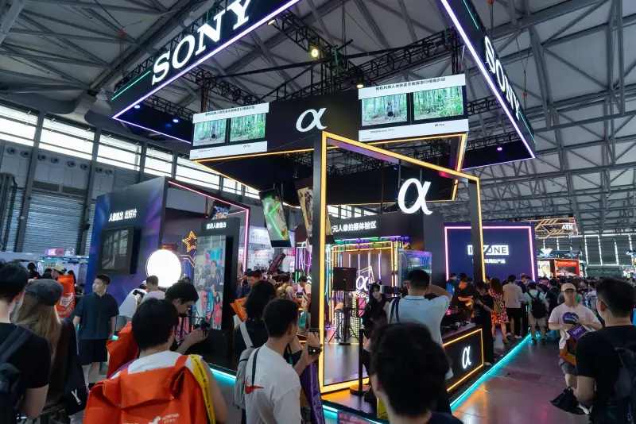
Sony booth
Frame real moments, unleash creative power
At this ChinaJoy, Sony built three zones around cosplay portrait shooting: a Cross-Dimension Portrait Zone, a Straight-out JPEG Zone, and an Imaging Product Zone. They drew creators, cosplayers, and visitors to shoot and post, and to let ideas run free in varied settings. The booth stayed busy.
Visitors tried the image-flagship Alpha 7R V with the F2 series lenses, such as the FE 28-70mm F2 GM and FE 50-150mm F2 GM. They also tested the Creative Look straight-out colors of cameras such as the Alpha 7C II and ZV-E10M2. Pro flash units such as the HVL-F60RM2 also appeared, to speed up the workflow. Sony invited cosplayers to take part, so creators could shoot in real settings. People talked and tried shots throughout, and captured real feeling in a dimension-rich setting.
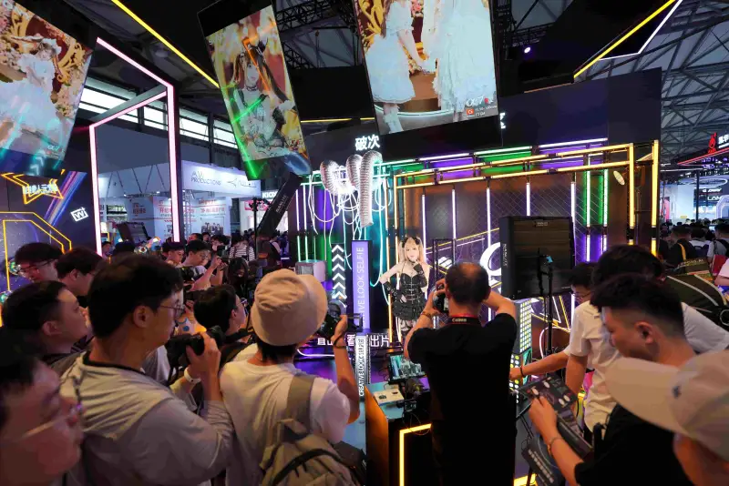
Sony imaging product trial
In the Cross-Dimension Portrait Zone, Sony showed pro kits of flagship mirrorless bodies and G Master lenses, with pro flash, open for visitors to try. The mood was lively, and many photographers came to shoot and feel, in real use, how pro gear performs for portraits.
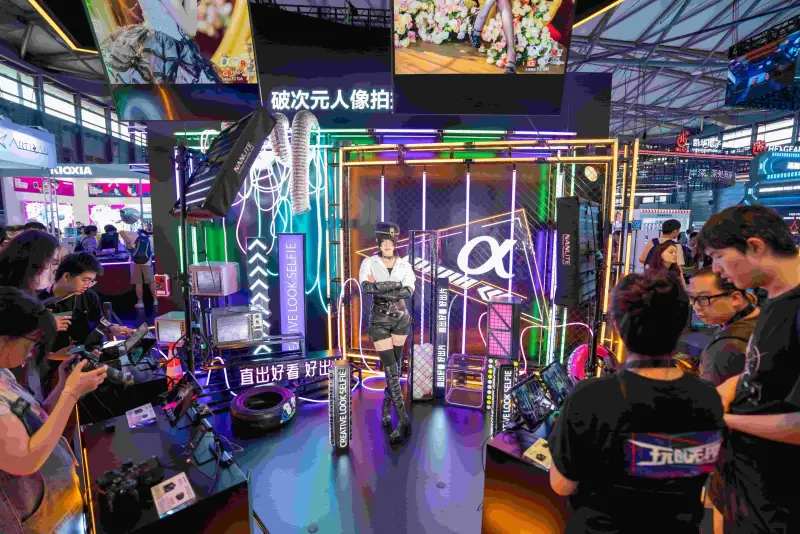
Cross-Dimension Portrait Zone
As Sony’s image flagship, the Alpha 7R V has about 61 megapixels. It renders makeup detail and fabric texture clearly. The high pixels also give wide freedom to crop, so you can pull a close-up from a long shot, or crop a horizontal frame into a vertical one for varied compositions. In the busy hall, in low light or backlight, when a cosplayer turns, jumps, or waves a prop, or when a prop covers the eyes, the AI chip still locks the subject and focuses fast, so every highlight is sharp. The four-way vari-angle screen makes framing flexible from any angle. Ten Creative Looks, with eight adjustable parameters, cut out long color grading and give cosplay shots a mood, straight out of camera.
Sony’s F2 lenses offer a faster, simpler way to shoot portraits. The FE 50-150mm F2 GM does, in one lens, what once needed a set of primes such as 50mm, 85mm, and 135mm. The other F2 lens, the FE 28-70mm F2 GM, covers the common 35mm and 50mm lengths. Both hold a constant F2 for prime-like quality, beautiful bokeh, and fast grabs in low light. They soften the background, bring out the cosplayer, and suit the busy con. The zone also showed fast G Master primes such as the FE 85mm F1.4 GM II and FE 50mm F1.4 GM, for many lengths and styles.
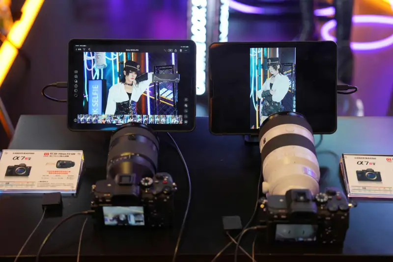
The image-flagship A7R V with F2 G Master lenses
Sony’s external flash offers strong performance and good camera link. You control flash settings from the body, and auto white balance matching keeps skin tones natural and the light balanced, so the cosplayer looks real and bright. The HVL-F60RM2 puts out GN60. With a compatible camera, it flashes 200 times in a 10-frames-per-second burst, and with the electronic shutter it can flash about 20 times per second for over a second. It covers 20mm to 200mm and supports 1/400 sync, for cosplayers in motion. The HVL-F46RMA is small yet practical, with GN46, coverage of 24 to 105mm, multi-angle rotation, and wireless control. It fits flexible multi-light setups and fast shooting on site.
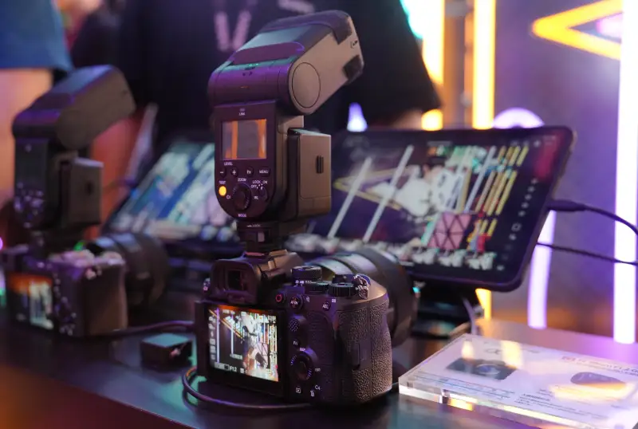
Flash shooting solutions
In the Straight-out Portrait Filter Zone, Sony showed light cameras with built-in Creative Looks, led by the Alpha 7C II and ZV-E10M2. Many cosplayers and photographers tried them. The feature is now on many Sony bodies, with up to ten Creative Looks, for moody photos straight out. Visitors could switch between film-retro, fresh-clear, and other filters to match the cosplay look. PT gives soft skin tones for portraits. VV2 is bright and clear, good for fabric texture. FL pairs a quiet tone with high contrast to strengthen mood. With many filters, every shutter press makes a moody image.
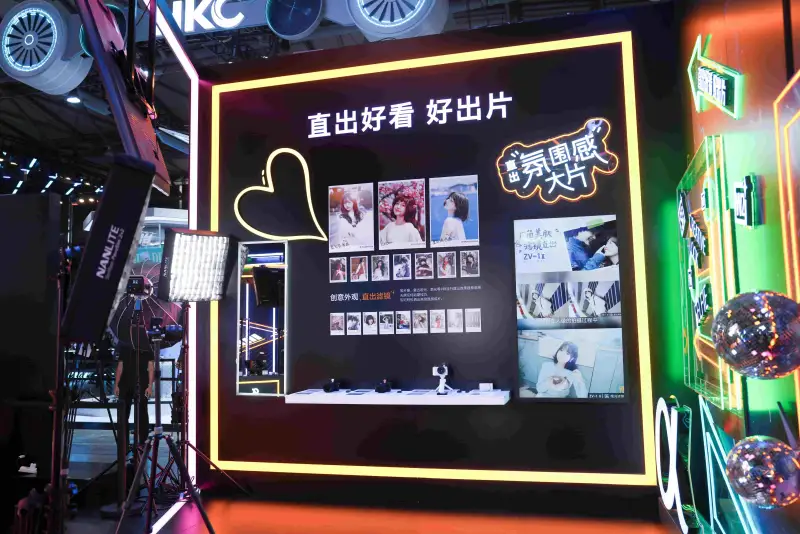
Straight-out Portrait Filter Zone
The full-frame Alpha 7C II has about 33 megapixels, and renders facial detail and skin tone finely, for refined, clear stills. The new ZV-E10M2 is light and compact, with built-in three-level skin smoothing, for softer, more natural portraits. Both track the eyes and face in real time, so in the busy, mixed light of the hall, or when a cosplayer moves widely, they stay locked on the subject and catch the moment.
The zone also added a Sony Straight-out Portrait Solution area. With the ZV-E10M2 and a commercial display, visitors took mirror selfies. The shot appeared at once on a large screen, with soft, clear skin, and drew many visitors.
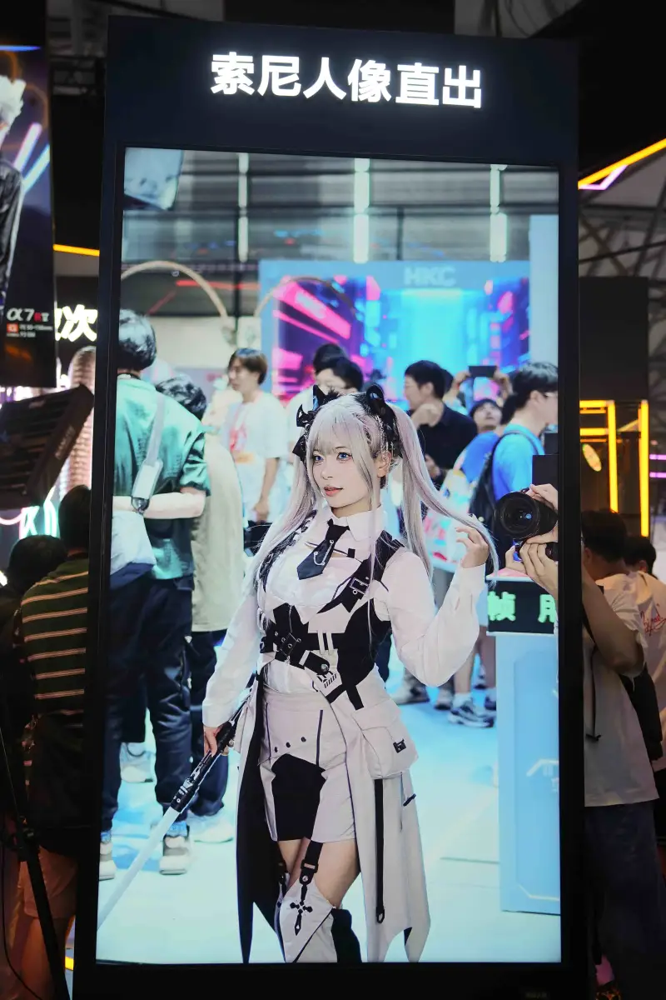
Straight-out Portrait Solution area
To make the setting feel real, Sony invited cosplay models to take part. Visitors could shoot them and feel the focus speed and image quality, for a more immersive session.
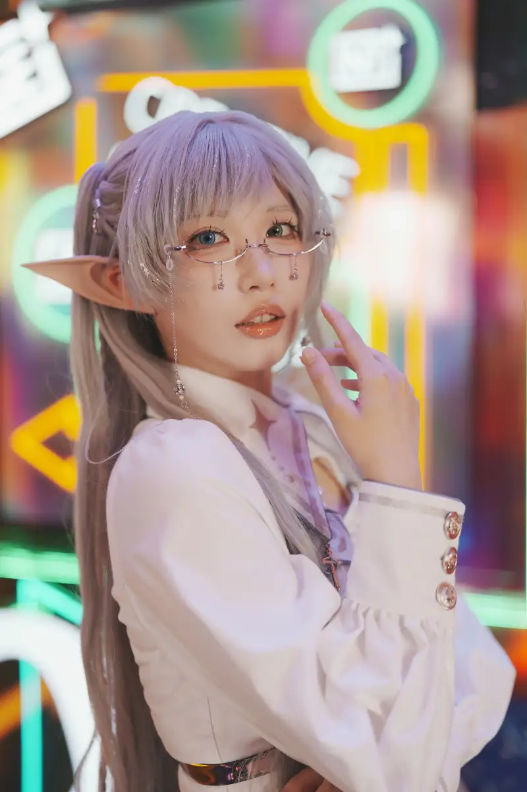
Photos of the live models
INZONE and gamers unlock an immersive arena
The esports side had three zones: a 360 Spatial Sound for Gaming Zone, a Sony OLED Vision Zone, and the INZONE Esports Base. Built on Sony’s audio, visual, and gaming technology, and guided by pro team needs, they are made for players who want a pro edge.
In the 360 Spatial Sound Zone, players tried the light wireless INZONE H5 headset. They listened for a sound direction and hit the light pillar on that side. When they were right, a success message showed on the big screen, and many players lined up to try.
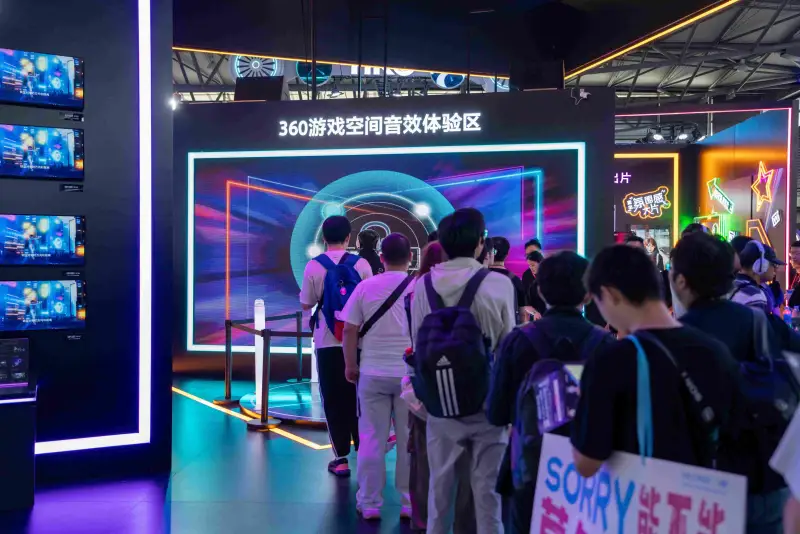
360 Spatial Sound for Gaming Zone
The INZONE H5 uses Sony’s 360 Spatial Sound for Gaming and 40mm drivers. It gives precise sound positioning and a wide sound field, and recreates in-game audio for an immersive world. By hearing and catching detail, players react faster and win the edge.
In the Sony OLED Vision Zone, players tried the INZONE OLED esports monitor and Sony Series 8 TV. Visitors praised the image quality and the immersive view, from a company with 100 years in film and 60 in TV.
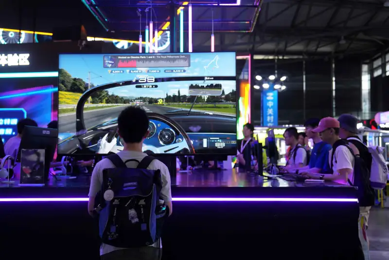
Sony OLED Vision Zone
Sony has a full display range, from Columbia Pictures and BRAVIA TVs to home cinema, professional monitors, commercial displays, and esports monitors. With its known image tuning and screen control, it renders color and light faithfully to the creator’s intent. The 480Hz flagship OLED esports monitor, the INZONE M10S, blends Fnatic pro players’ experience with Sony TV tuning. Its FPS presets, 24.5 and 27 inch competitive modes, and small-base stand were co-developed with Fnatic. With a 480Hz OLED refresh and 0.03ms response, it meets both speed and image needs, so players catch key detail faster and take the win.
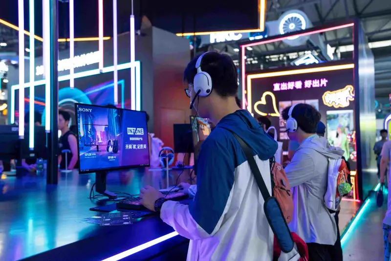
Visitors trying the games
At the INZONE Esports Base, a live-play area with high-end gear and popular games was also packed. High-end rigs with the INZONE M10S and INZONE H5 ran titles such as Arena Breakout: Infinite. Players could feel the fit between the M10S 480Hz OLED and the H5 spatial sound. A special PS5 next-gen area showed two displays working together. The INZONE M9II monitor is a 27-inch 4K 240Hz panel that supports PS5 VRR (variable refresh rate) and ALLM (auto low-latency mode) over HDMI 2.1, with auto HDR mapping to tune light and shade.
The 75-inch Sony BRAVIA XR Series 9 TV has the XR Cognitive Processor and XR Triluminos Pro for wide color and accurate rendering, and supports 4K/120Hz input. Both screens pair deeply with the INZONE H5. Its 2.4GHz dongle carries PS5 game audio and party chat at once, for clear talk in a busy match.

INZONE Esports Base
To help esports grow, Sony INZONE will keep working with leagues, pro teams, and game makers. It became an official Perfect World Esports partner, the official gear of the Perfect World PNL pro league, a sponsor of the S6 streamer star league, and the official gear of CAC. It also works with the XLG club to spread esports culture and draw more players. Sony will also use its technology to support the industry and move it toward more professional, orderly, and smart growth.
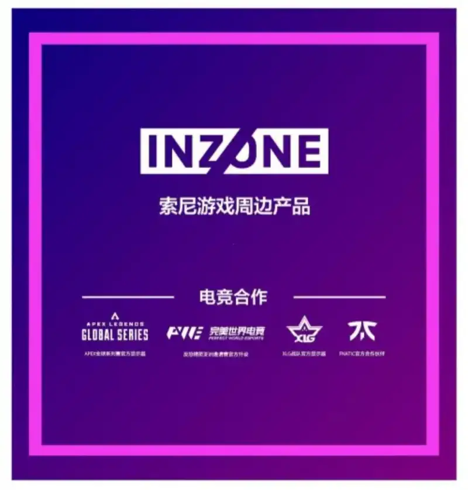
At this ChinaJoy, Sony used imaging and esports together to build an immersive space for making and playing, and gave visitors a professional yet interactive show. Going forward, Sony will keep using technology to empower creativity, and explore more with photographers and gamers.
Sony Group is a creative entertainment company built on solid technology. It runs six businesses: games and network services, music, pictures, entertainment technology and services, imaging and sensing solutions, and financial services. Sony’s purpose is to move the world through the power of creativity and technology. In the fiscal year ended March 31, 2025, its consolidated sales were about 85 billion US dollars.